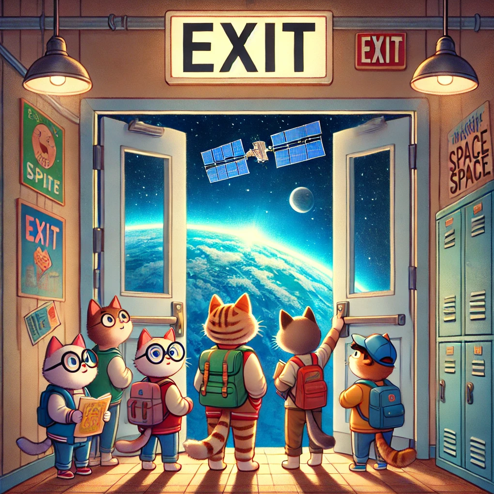
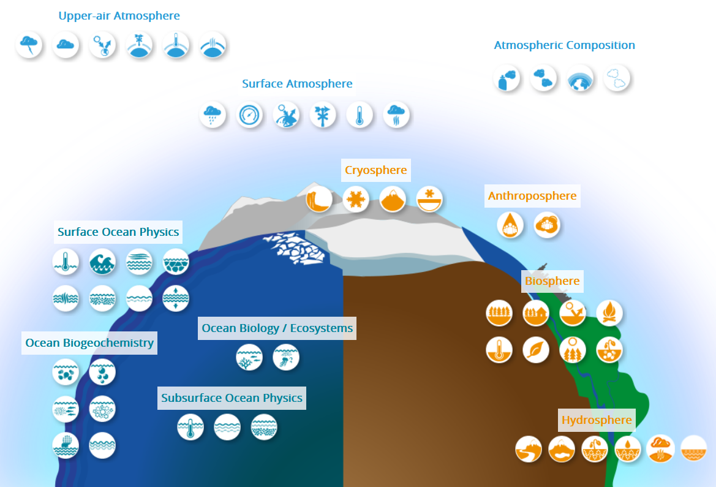
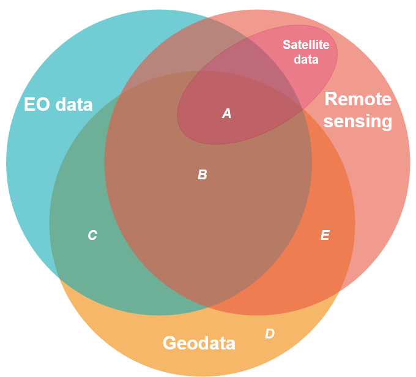
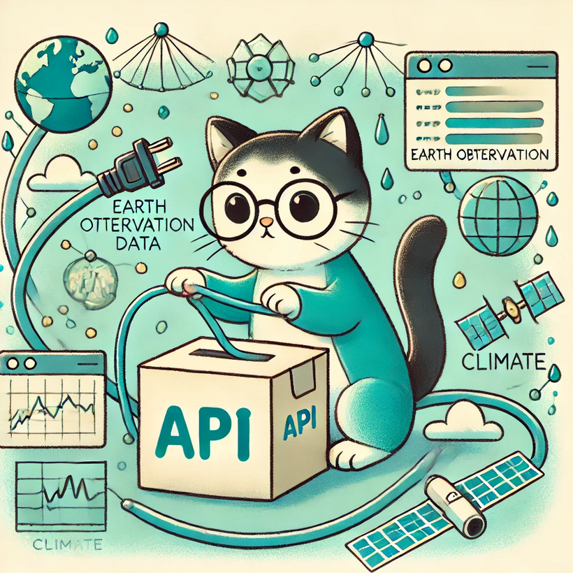

Introduction to Earth observation data
What is Earth observation data? 🌐

Earth observation (EO) data refers to all collected information about the Earth’s physical, chemical, and biological systems. Utilizing Earth observation data allows to study the Earth’s atmosphere, land cover, near subsurface, oceans and inland waters, as well as biological diversity and ecosystems. Applications of EO data in academia, industry, and policy-making are extensive. It is crucial for the operation of activities in environmental protection, energy management, urban planning, agriculture and fisheries, forestry, public health, risk and hazard management, transport and mobility, civil protection, or tourism.
Additional information on Earth system indicators
There are many crucial Earth system indicators. With respect to the Earth’s climate, for example, the Global Climate Observing System (GCOS) maps 55 Essential Climate Variables (ECVs). ECVs are seen as the empirical evidence base for the guidance of mitigation and adaptation measures, risk assessment and the understanding of climate services. EO data is essential for systematically measuring these variables. Check out their documentation of ECVs.

There is often confusion about terms such as Earth observation data, geodata, remote sensing, or satellite data. Let’s disentangle these different concepts.
- Earth observation data 🌐: Information collected about the Earth’s system
- Geospatial data 🗺: Data that is georeferenced (includes information on the location)
- Remote sensing data 📡: Information that is acquired by sensors “from a distance”. Remote sensing uses electromagnetic radiation from a source (natural, e.g. solar radiation, or artificial, e.g. radar) that interacts with targets on the Earth’s surface in a unique way (spectral signatures).
- Satellite data 🛰: Information that is acquired by sensors via satellites
Background on Remote Sensing
Electromagnetic radiation: is the transfer of energy from a target through space via waves that vary in wavelength, frequency, amplitude, and speed. It can be captured by sensors for analysis.
Radiance: Is the amount of electromagnetic radiation emitted or reflected by an object in a specific direction. (In contrast, irradiance refers to the radiation that strikes the surface of the object.)
Reflectance: Refers to how much light or electromagnetic radiation a surface bounces back compared to how much it receives. Different materials reflect and absorb light in unique ways, which helps us identify them using their spectral signature—a kind of “fingerprint” based on reflectance at different wavelengths.
Vegetation: Healthy plants reflect a lot of green light (why they look green) and near-infrared (NIR) light, but they absorb red and blue light for photosynthesis.
Water: Water reflects very little light overall. Most radiation is absorbed or transmitted into the water. However, shorter wavelengths like blue and green are more likely to be reflected—this is why water can appear blue.
Soil: Reflectance depends on factors like moisture. Wetter soil reflects less light, while dry soil reflects more.
As you can see, these four terminologies address different aspects of the data. While “EO data” refers to the data content (the Earth system), “geospatial data” addresses the location, and “remote sensing” and “satellite data” address the way of obtaining the data.
The Venn diagram below visualizes these definitions and shows overlaps and gaps between these concepts. Except for satellite data, which can be seen as a subset of remote sensing data, all other concepts have overlaps and gaps with each other.

Let’s disentangle these overlaps a bit further:
- A: The area A captures all concepts discussed above - Georeferenced Earth observation data derived from satellite sensors. An example for this are nighttime lights 🌇. Night lights are highly informative for social scientists to measure population growth, electrification and light pollution, the expansion of urban areas, the impacts of natural events, and economic activity. An important satellite for nighttime lights is the NASA/NOAA Suomi National Polar-orbiting Partnership (Suomi NPP), which was launched in 2011. On board of Suomi NPP, the Visible Infrared Imaging Radiometer Suite (VIIRS) instrument observes nighttime lights with the day night band (DNB). Luckily for us, we do not have to handle this raw data. NASA’s Black Marble project offers various pre-processed products with high spatial and temporal resolution and temporal coverage since 2012. The data products are free and open access. R user benefit from the BlackMarbleR-package, which is a user-friendly interface to Black Marble data.
- B: Area B is similar to A except that this data is derived from remote sensing OTHER than satellite data. There are, in fact, other platforms for sensors, like aircrafts or drones. For example, data on gases in the atmosphere are collected that way. Often, airborne data has a smaller geographical coverage and is more case specific. Furthermore, it is much more often proprietary and costly. For example, commercial providers offer airborne measurements of GHG emissions on a very high spatial resolution (<1m) to estimate point-source emissions of factories and power plants.
- C: C represents EO data which is georeferenced but NOT derived from remote sensing. There are several alternatives to EO data generation: Ground-based sensors (called “in-situ”) are widespread sources of EO data. Weather stations or local air quality sensors are common examples. Projects like Google’s StreetView can also be classified here. But C also captures a data source which is very familiar to social scientists: Field surveys and survey-based methods. Biodiversity monitoring and soil quality projects often employ these methods. This work is not necessarily performed by experts only. Citizen science projects have contributed immensely to mapping local biodiversity, air quality, or land use: For example, scientists work together with “laypeople” to map bird populations like the RSPB in the UK with the annual Big Garden Birdwatch. Check out the European Citizen Science Association website to learn more about this form of data generation.
- D and E: The two areas D and E deviate from the previous concepts because they are NOT EO data. D captures all geodata which is not derived from remote sensing and does not constitute EO data. This is primarily data which is human-centered - many examples of which are familiar to social scientists: Georeferenced variables on socio-demographics or economic indicators like Census data, electoral outcomes, or environmental attitudes and behavior. Examples for E, which represents data gathered based on remote sensing but is NOT classified as Earth observation, are space exploration and astronomy 🌌. Imaging of Mars’ surface is such an example. Future generations of social scientists might be concerned with interplanetary societal issues - (un)fortunately for us, we will focus on societies from planet Earth 🚀.
As you can see, the main areas when it comes to EO data are A, B, and C. As social scientists interested in working with EO data, D is similarly relevant: Often, we are interested in spatially linking our social indicators (D) with EO data. We therefore see these as two sides of the same coin. The geolocation represents the functional link between our social indicators and the Earth system context.
There are a few additional areas in the Venn diagram which we have not highlighted. These are the fields which do not overlap with the circle for “geodata”. Since we are focussing on geo-referenced data in this project, these parts will not be further considered in our tutorials.
The conceptual distinctions between the ways of obtaining data (in-situ, airborne, or satellite sensors) are important but often not clear cut in practice. Most of the time, we access processed (and/or simulated) data products 🎁, which are generated by integrating datastreams from various sensors to increase data quality. This is done to enhance accuracy, scope or resolution, helps to validate data, or to fill data gaps. We will explore a few common sources and indicators in the next chapter.
Relevant sources of Earth observation data

Europe’s Earth Observation programme is called Copernicus. It is funded and managed by the European Commission and partners like the European Space Agency (ESA) and the European Organisation for the Exploitation of Meteorological Satellites (EUMETSAT). It has been operational since 2014 and provides free access to a wealth of satellite data from ESA’s “Sentinel” fleet. Copernicus combines data from satellites, ground-based as well as air- and sea-borne sensors to track the Earth system and provide this information largely free for all customers.
Additional information on the Copernicus programme
Check out this 5min video on the Copernicus programme.The ESA describes Copernicus as the world’s most ambitious Earth observation program, which will be further expanded in the coming years. On the Copernicus homepage, the daily data collection is estimated at 12 terabytes. Given this complexity, Copernicus has separated its services for public usage along several thematic areas:
- Atmosphere 🏭: Copernicus Atmosphere Monitoring Service (CAMS)
- Marine 🐳: Copernicus Marine Service (CMEMS)
- Land 🏞: Copernicus Land Monitoring Service (CLMS)
- Climate change ❄️ 🌡: Copernicus Climate Change Service (C3S)
- Emergency ⛈ 🌪: Copernicus Emergency Management Service (CEMS).

This project focuses on the data provided by the Copernicus programme. However, this is not the only relevant source of EO data which you can consider for your projects. The US equivalent, for example, is based on the Landsat satellite programme, which is jointly operated by NASA and the US Geological Survey (USGS). Google’s Earth Engine Cloud Computing Platform catalogs an extensive selection of additional data sets from various sources.